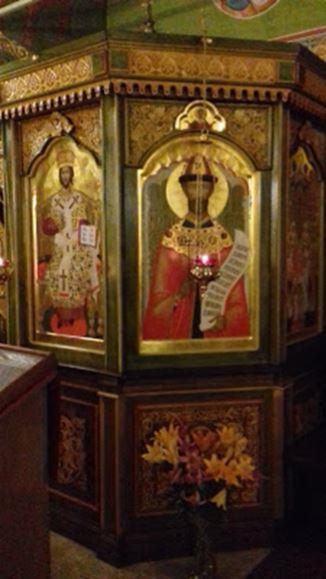
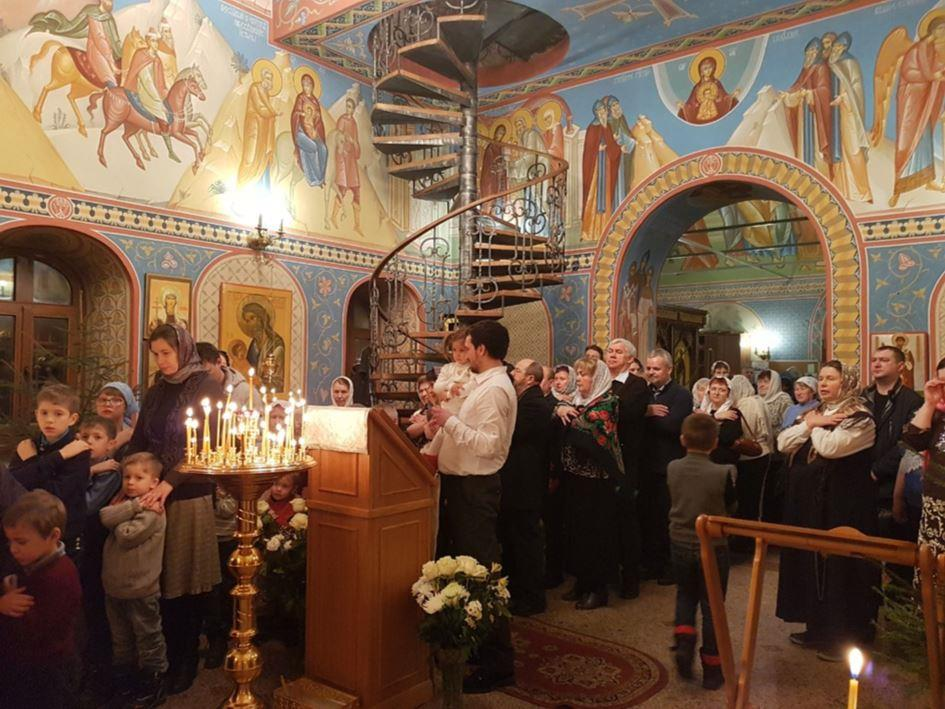

L'office à la mémoire de la famille impériale avait lieu dans l'église neuve du Signe, construite par le marchand de vins et spiritueux à la place de son magasin, qui occupait celle de l'ancienne église. Elle est très jolie.
La première fois, les dorures de l'iconostase m'avaient choquée, cette fois-ci, j'ai trouvé que c'était assez harmonieux et les icônes sont belles, le chœur tout à fait décent. Avec le recteur officiait le prêtre de l'église de la Protection de la Mère de Dieu, le père Alexandre.
 L'icône du tsarEn entrant dans les lieux, j'ai tout de suite vu une grande icône du tsar Nicolas. J'étais émue, je pensais à ces gens, à leur air digne, honnête, sensible et raffiné, à leurs jeunes filles ravissantes, au petit garçon malade plein de bonté et de noblesse, à leurs serviteurs fidèles, au docteur Botkine... A tous ces gens massacrés par des gnomes qui ont achevé cet enfant, alors qu'il rampait pour rejoindre son père, et la princesse Anastasia, à coups de baïonnettes, et qui les ont arrosés d'acide... Ne faut-il pas être un parfait démon pour traiter ainsi de telles personnes, pour inonder d'acide de tels visages ?
Mais à propos de visages, à moins d'être soi-même complètement égaré, il suffit de les comparer avec ceux de leurs bourreaux, des leaders bolcheviques qui ont confisqué le pouvoir pour comprendre à qui on avait affaire.
Cependant, dans les fils de commentaires russes apparaissent toujours les imprécations vibrantes de haine de mutants soviétiques qui justifient ce crime et ceux qui ont suivi et considèrent l'opposant politique comme un ennemi personnel. Ils sont extrêmement agressifs. Sectateurs de bolcheviques russophobes acharnés à détruire tout ce qui était russe, ils appellent Nicolas le Sanglant cet homme civilisé, humain, sensible et plein de bonne volonté qui a commis l'erreur d'entrer dans la guerre de 14 pour respecter sa parole...
Les massacres soviétiques, les famines organisées, l'esclavage d'état que fut le Goulag ne sont sans doute que des détails. Il est vrai qu'ils les nient, ou plus grave, les justifient : des ennemis du peuple... Mais le peuple, à mes yeux, ce sont tous ces gens sur la tombe desquels ils crachent et de nos jours, ceux qui avec lesquels je prie...
Il semble que cet office nocturne ait été accompli à travers toute la Russie, car c'est au milieu de la nuit qu'on a tué la famille impériale. Sur Pereslavl, il avait lieu à trois endroits. Les prêtres étaient vêtus de rouge comme pour l'office de Pâques. Ils ont lu l'évangile de Jean :
Ce que je vous commande est de vous aimer les uns les autres. Si le monde vous hait, sachez qu'il m'a haï avant vous. Si vous étiez du monde, le monde aimerait ce qui serait à lui ; mais parce que vous n'êtes point du monde, et que je vous ai choisis du milieu du monde, c'est pour cela que le monde vous hait.
Souvenez-vous de la parole que je vous ai dite : le serviteur n'est pas plus grand que son maître. S'ils m'ont persécuté, ils vous persécuteront aussi ; s'ils ont gardé mes paroles, ils garderont aussi les vôtres. Mais ils vous feront tous ces mauvais traitements à cause de mon nom ; parce qu'ils ne connaissent point celui qui m'a envoyé. Si je n'étais point venu et que je ne leur eusse point parlé, ils n'auraient point le péché qu'ils ont ; mais maintenant, ils les ont vues, et ils ont haï et moi et mon Père. Celui qui me hait, hait aussi mon Père.
Avant la communion, le chœur a chanté : « sainte Russie, garde la foi orthodoxe ». À la fin, nous avons tourné autour de l'église en procession, en nous arrêtant aux quatre côtés, avec aspersion d'eau bénite. J'en ai pris une giclée en pleine figure, les prêtres adorent arroser leurs fidèles, et les fidèles ne sont pas contents, s'ils ne le sont pas copieusement. Puis on a lu l'évangile de Matthieu :
Vous entendrez parler de guerres et de bruits de guerres ; mais gardez-vous bien de vous troubler, car il faut que ces choses arrivent, mais ce ne sera pas encore la fin. Car on verra se soulever peuple contre peuple et royaume contre royaume ; il y aura des pestes, des famines et des tremblements de terre en divers lieu. Et toutes ces choses ne seront que le commencement des douleurs. Alors on vous livrera aux magistrats pour être tourmentés, et on vous fera mourir ; et vous serez haïs de toutes les nations à cause de mon nom. En ce même temps, plusieurs trouveront des occasions de scandale et de chute, se trahiront, et se haïront les uns les autres. Il s'élèvera un grand nombre de faux prophètes, qui séduiront beaucoup de personnes. Et parce que l'iniquité sera accrue, la charité de plusieurs se refroidira. Mais celui-là sera sauvé qui persévérera jusqu'à la fin.
Le vent était très doux, je distinguais des étoiles, ce n'était pas Solan par nuit de mistral mais quand même, il y en avait.
Je n'étais pas fatiguée, je n'avais pas sommeil et je ressentais une sorte de tristesse pleine de grâce. Que la mort du tsar soit liée à la venue des ténèbres et des derniers temps, je l'ai toujours senti, mais cela me paraissait encore plus évident. Le répit chrétien qui suivit la venue du Christ a pris fin avec le meurtre du roi anglais par Cromwell, puis celui du roi français par la franc maçonnerie et enfin l'assassinat du tsar russe par des intellectuels juifs enragés.
Comme j'étais avec Katia et qu'elle connaissait l'un des prêtres, nous avons été embarquées, après l'office, aux agapes qui suivaient. Cela m'a donné l'occasion de constater que le père Alexandre semblait pétillant d'intelligence et d'humour.
Un membre du chœur a chanté une abominable chansonnette cucul la praline à thème religieux, dans le style variété internationale. Ce fut mon seul moment de tristesse. J'avais envie de chanter un vers spirituel, mais je n'ai pas osé.
A part ce détail, tout était très chaleureux et touchant.
Je suis sortie de là à trois heures du matin, le jour se levait, il se lève encore très tôt. Arrivée chez moi, je n'avais toujours pas sommeil, et cette grâce m'accompagnait, comme si j'avais réellement rencontré la famille martyre, et constaté qu'elle était sainte et qu'elle me protégeait. Car je l'ai priée, je l'ai priée pour la sainte Russie, et pour moi, qui ai choisi d'y retourner et de partager son sort, comme la tsarine Alexandra et sa sœur, la grande duchesse Elizabeth, à laquelle le père Barsanuphe avait autrefois consacré tous ses convertis.
J'ai dormi un peu, et en ce jour anniversaire de l'affreux massacre, il faisait un de ces temps béni qui surviennent parfois ici : un vent tiède, beaucoup de lumière, une lumière spéciale, douce et omniprésente, j'ai jardiné un peu, avec toujours cette grâce au cœur, et quand cela arrive, c'est un signe, c'est une indication. Je me sentais participante de la dernière ligne droite de la grande Procession russe, que j'en sois ou non digne, par la grâce de l'amour que je porte à la sainte Russie.
Partager cette page